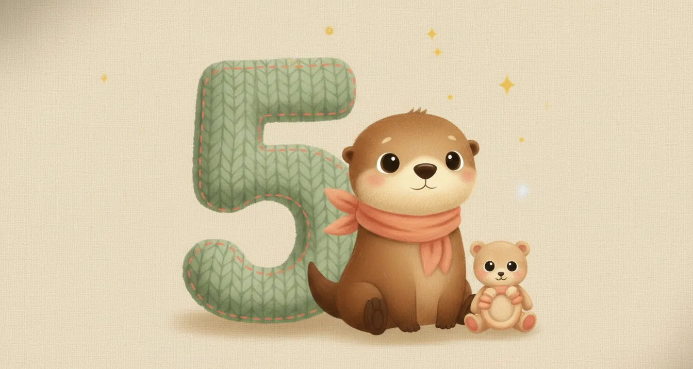
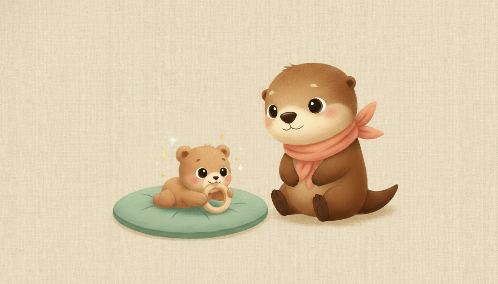
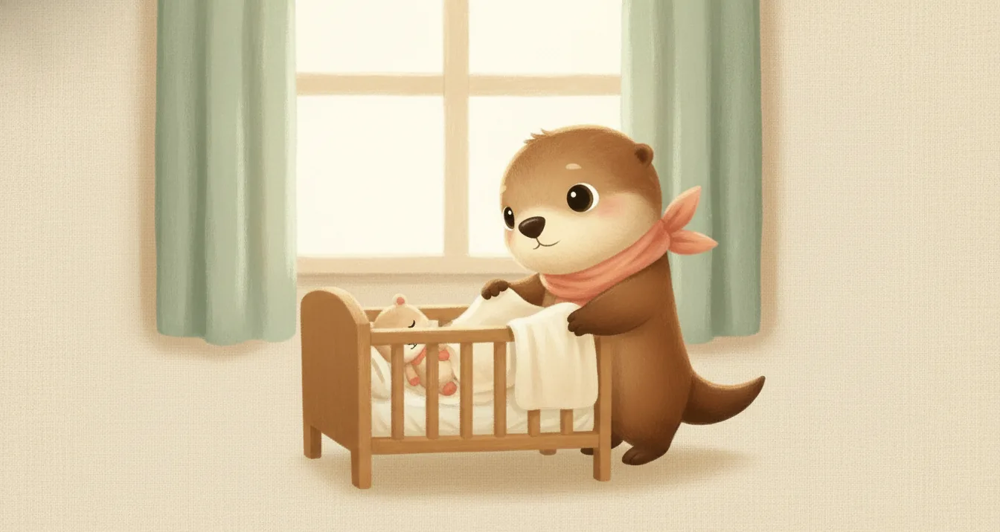
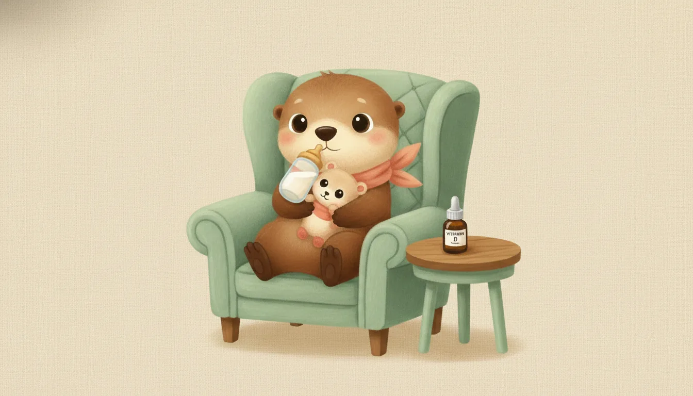
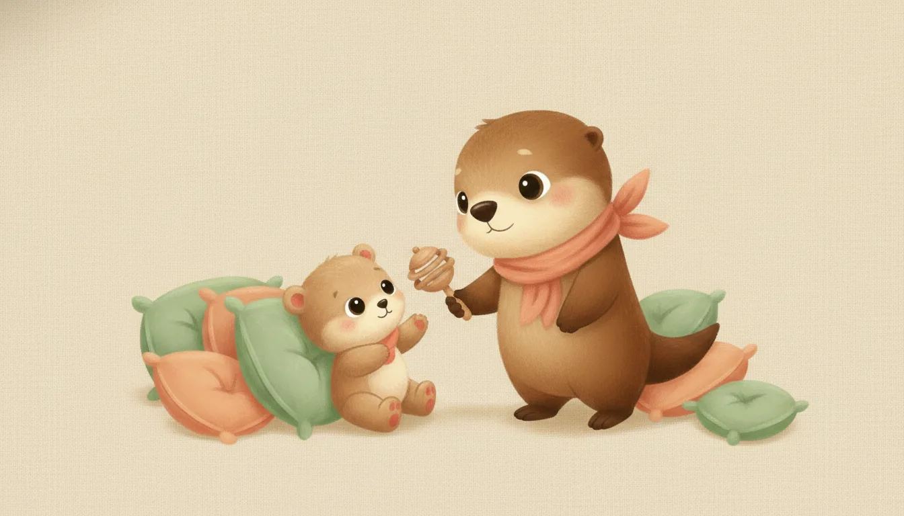
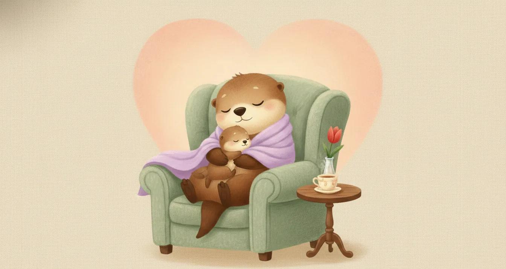

Ebeveynler için · Ay Ay Bebek Rehberi
5 aylık bebek: bu ay sizi ne bekliyor?
5. ay, bebeğinizin dünyayı avuçlarının ve ağzının arasında keşfettiği bir aydır — eline geçen her şey ağzına gider, sırtından karnına dönmeyi dener, destekle oturmaya başlar. Bu sayfa, 5 aylık bir bebeğin neler yaptığını, uyku ve beslenmenin nasıl seyrettiğini ve beyin gelişimini nelerin desteklediğini tek yerde toplar.
Serinin on iki ayı da tamamlandı.

Bir bakışta 5. ay
2-3 gündüz şekerlemesi
hâlâ tek besin
ilk keşif aracı
denemeleri başlıyor
menenjokok B gibi

Gelişim: bu ay bebeğiniz ne yapar?
Aşağıdakiler çoğu bebeğin 5. ayın sonuna doğru yaptıklarıdır; her bebek kendi hızında ilerler, biraz erken ya da geç olması çoğu zaman normaldir.
Hareket
- Yüzüstünden sırtüstüne dönmeyi başarır; sırtüstünden yüzüstüne dönme bu ay ya da biraz sonra gelir.
- Yastık ya da ebeveyn desteğiyle kısa süreli oturmayı dener.
- Ayakları sert bir zemine değince belirgin biçimde iter, bacak kaslarını güçlendirir.
- Bir nesneye iki eliyle birden uzanır, avucuyla (palmar tutuş) kavrar.
Ağızla ve elle keşif
- Eline geçen her şeyi ağzına götürür: oyuncak, battaniye, kendi ayak parmakları. Bu bir alışkanlık değil, dokuyu ve şekli anlamanın yoludur.
- Nesneleri bir elden diğerine aktarmayı denemeye başlar.
- Aynadaki yansımasına ilgiyle bakar, gülümser.
İletişim ve sosyal
- Art arda ünlü-ünsüz sesler çıkararak "babbling" yapar (ba-ba, da-da gibi).
- Sesiyle mutluluk ve hoşnutsuzluğunu belirgin biçimde ifade eder.
- Tanıdık yüzleri tanır; bazı bebekler yabancılara karşı temkinli olmaya başlar.
Bu ayın videosu
Ağız, elden önce gelen ilk alet
Bebeğinizin her şeyi ağzına götürmesi bir alışkanlık değil, dünyayı anlamanın en doğal yoludur. Bir dakikalık bu video, 5. ayın imzası olan "ağızla keşif" dönemini anlatıyor.

Uyku: gündüz ritmi oturuyor
Toplam uyku süresi günde 12–14 saat civarındadır. Gündüz uykuları bu ay 2-3 düzenli şekerlemeye doğru toparlanmaya başlar, gece uykusu ise birçok bebekte uzun bloklar hâlinde sürer. Güvenli uyku kuralları değişmeden devam eder:
- Her uykuda sırtüstü yatırın; beşik boş kalmalı.
- Tutarlı bir yatma ve şekerleme rutini (karanlık oda, uyku tulumu) ritmi destekler.
- Aynı odada, kendi yatağında uyumaya devam; aynı yatağı paylaşmayın.
- Bebek kendi kendine yuvarlanabiliyorsa, gece tekrar sırtüstüne çevirmenize gerek yoktur.
Ayrıntı için: Çocuklarda uyku düzeni rehberi.

Beslenme: ne verilir, ne verilmez?
Bu ayda da menü değişmez: anne sütü — istedikçe, günde 6–8 ve üzeri öğün. Bebek sofrada yenen yemeklere ilgiyle bakabilir, hazırlık işaretleri (baş kontrolü, destekle oturma, dil itme refleksinin azalması) bu ay belirginleşebilir — ama ek gıda için henüz zaman değildir. Anne sütü yoksa ya da yetmiyorsa mama, hekim önerisiyle ve kutu talimatına birebir uyularak hazırlanır. Günlük 400 IU D vitamini damlasına devam edin.
Bu ayda da asla verilmeyecekler
- Su: Anne sütü ihtiyacı zaten karşılar.
- Bal: 12 aydan önce bebek botulizmi riski taşır.
- İnek/keçi sütü, bitki çayları, şekerli su: Güvenli değildir.
- Her türlü ek gıda: 6. aydan önce sindirim sistemi hazır değildir; erken başlamak alerji ve boğulma riskini artırır.
Hazırlık belirtileri ve ek gıda dönemi için: Ek gıdaya nasıl başlarız?

Oyun ve beyin gelişimi
Ağızla keşfin yanına eller de hızla katılıyor. Beyin gelişimi için en güçlü uyaran hâlâ sizsiniz.
- Güvenli ağza götürme oyuncakları: Silikon diş kaşıyıcı, ahşap çıngırak, yumuşak kumaş kitap gibi farklı doku ve sertlikte, kolay temizlenebilir oyuncaklar sunun.
- Desteklenerek oturma: Yastıklarla çevrili güvenli bir alanda kısa süreli oturma pratiği yaptırın; asla gözetimsiz bırakmayın.
- Uzanma-kavrama pratiği: Bir oyuncağı hafifçe erişim mesafesinin dışında tutup uzanmasını teşvik edin.
- Konuşun, söyleyin, okuyun: Bebeğinizin babbling seslerine durup karşılık verin — bu "servis-karşılama" beyin mimarisini kurar.
- Ekran: Bu yaşta hâlâ önerilmez; 18–24 aydan önce ekran yalnızca görüntülü aile aramasıyla sınırlı tutulmalıdır.
Bu ayın kontrol listesi
- Aşı durumu: Ulusal takvimde 5. ayda rutin aşı yoktur; sıradaki ulusal randevu 6. ayın sonundadır. Ancak bu ay çoğunlukla menenjokok B gibi takvim dışı özel bir aşı randevusu planlanır — hangi özel aşıların bebeğiniz için uygun ve zamanlaması olduğunu hekiminizle görüşün. Ayrıntı için: Hangi ay hangi aşı?
- D vitamini damlasına günlük devam edin.
- Bebeğinizin yuvarlanma, destekle oturma ve uzanma denemelerini bir sonraki muayenede paylaşmak üzere not edebilirsiniz.
- Ağza götürülen tüm oyuncakların küçük parçasız ve kolay temizlenebilir olduğundan emin olun.
Ne zaman hekime başvurmalı?
- 38°C ve üzeri ateş: Küçük bebekte ateş hafife alınmamalı — hekiminize danışın.
- Emmeyi reddetme, çok zayıf emme veya günde 4'ten az ıslak bez.
- Hiç baş kontrolü olmaması ya da oturtulduğunda başın tamamen geriye düşmesi.
- Bir nesneye hiç uzanmaması, ellerini hiç kullanmıyor gibi görünmesi.
- 6 ayı geçtiği hâlde hiç yuvarlanma denemesi olmaması.
- Kazanılmış bir becerinin kaybı (gerileme) — her zaman değerlendirilmelidir.
- Dakikada 60'ın üzerinde hızlı solunum, inleme, göğüste çekilmeler, morarma.
Acil bir durumda 112'yi arayın veya en yakın acil servise başvurun. Gece gelişen ateş için: Gece ateş rehberi.

Anneye not
Islak, dişlenmiş oyuncaklardan rahatsız olmayın — bebeğiniz dünyayı, henüz elinden önce ağzıyla okuyor, ve bu büyümenin en doğal hâli. Kendinize de zaman ayırmayı unutmayın; küçük molalar bile fark yaratır. İki haftadan uzun süren yoğun hüzün, sürekli ağlama isteği ya da bebeğe karşı ilgisizlik hissi doğum sonrası depresyonun işareti olabilir; tedavi edilebilir bir durumdur — hekiminizle paylaşın.